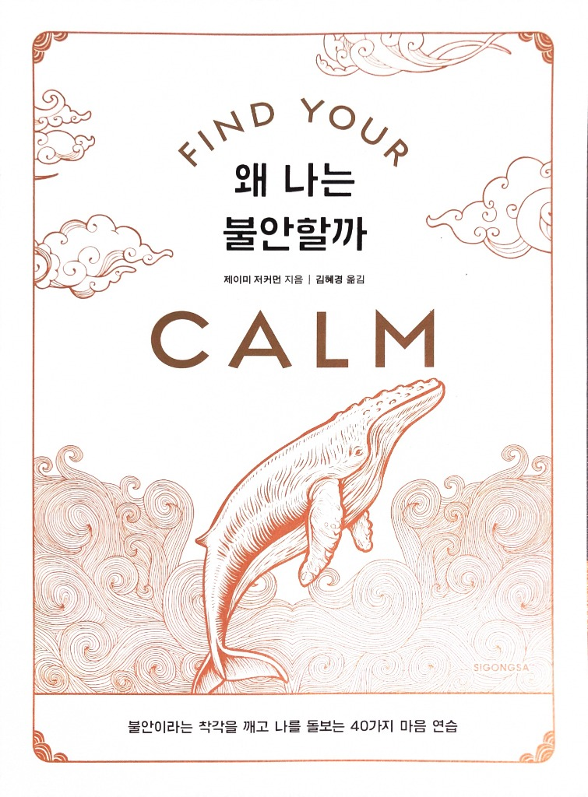

Clinical Psychology · ACT Workbook
불안에 맞서 싸우지 마세요,
파도처럼 가만히 지나가게 두세요
임상심리학자 제이미 저커먼 박사의 도서 《FIND YOUR 왜 나는 불안할까》와 함께 읽는 디지털 워크북입니다. 책을 읽으며 쪽수를 맞추고, 40가지 연습을 직접 실천하며 나만의 평온을 찾아가세요.

임상심리학자 제이미 저커먼 박사의 도서 《FIND YOUR 왜 나는 불안할까》와 함께 읽는 디지털 워크북입니다. 책을 읽으며 쪽수를 맞추고, 40가지 연습을 직접 실천하며 나만의 평온을 찾아가세요.
오감을 사용해 머릿속 불안에 형태와 색깔, 무게를 부여하고 관찰자와 생각을 분리하는 인지적 탈융합 연습입니다.

반갑습니다. 《FIND YOUR 왜 나는 불안할까》 도서 지식과 내면의 쉼표 3단계 치유(신체 접지 · 기적수업 용서 · 온전함 선언)가 통합된 마음 치유 동반자입니다.
책을 읽다 마음에 걸린 문장이나 지금 마음에 이는 어떤 파도든 편안하게 들려주세요. 질문하시면 아래의 3단계 통합 치유 카드와 맞춤 실천 연습을 즉시 처방해 드립니다:
"감정은 바다의 파도와 같습니다. 맞서 싸우면 휩쓸리지만, 서핑하듯 관찰하면 스스로 정점을 찍고 가라앉습니다."
《FIND YOUR 왜 나는 불안할까》 40가지 연습과 3분 응급 처방전을 실천하며 기록한 나만의 치유 저널입니다. 생각과 감정의 변화, 주관적 불편감(SUD) 완화 추이를 한눈에 확인하고 지속적인 성장을 이어가세요.
풍선이 부풀어 오를 때 코로 숨을 깊게 들이쉬고, 줄어들 때 입으로 천천히 내쉬어 보세요. 부교감 신경을 즉각 자극하여 몸의 긴장을 풉니다.
"맞서 싸우면 휩쓸리지만, 가만히 바라보면 파도는 스스로 하얗게 부서지며 가라앉습니다."
턱과 어깨의 힘을 툭 빼고, 아랫배가 부풀어 올랐다 가라앉는 숨의 파도에 의식의 닻을 내리세요.
감정을 억누르거나 상황을 탓하려던 마음속의 투쟁을 조용히 손에서 내려놓으세요.
수면 위의 파도가 제아무리 거세게 요동쳐도, 심연 속 바다의 깊은 평화는 단 1밀리미터도 훼손되지 않습니다. 나는 이미 온전합니다.
신체와 생각, 영혼의 3차원을 통합하는 근본적인 평온의 메커니즘을 이해합니다.
불안이 일어날 때 우리 뇌의 편도체(경보 장치)는 온몸에 비상 신호를 뿜어냅니다. 이 상태에서는 긍정적인 생각이나 논리적 설득이 통하지 않습니다.
가장 먼저 신체 감각(발바닥, 호흡의 온도, 어깨 이완)에 닻을 내려 자율신경계에 "지금 위험하지 않다"는 생리적 신호를 보내야 생각의 빗장이 풀립니다.
기적수업에서 용서란 타인의 잘못을 참는 것이 아니라, "상황을 위협으로 해석하던 내 마음의 두려운 투사를 거두어들이는 것"입니다.
수용전념치료(ACT)의 인지적 탈융합과 마찬가지로, 떠오르는 생각을 '나 자신'이 아닌 '마음에 잠시 스쳐 지나가는 구름'으로 분리할 때 공간이 생깁니다.
우리는 종종 불안이나 결점을 고쳐야만 완전해진다고 착각합니다. 하지만 구름이 아무리 짙게 껴도 구름 뒤 푸른 하늘은 결코 상처 입지 않습니다.
당신은 결코 망가지지 않았습니다. 어떤 불안의 파도도 내면의 거룩한 빛을 파괴할 수 없습니다. "나는 지금 이대로 온전하다"는 선언이 평온을 엽니다.
접지(60초) · 용서(60초) · 온전함(60초)을 Dr. Z의 실시간 TTS 음성과 타이머로 직접 체화합니다.